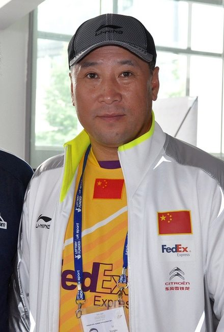

Тянь Бинъи назначен главным тренером сборной Китая по бадминтону на цикл Лос-Анджелес-2028
63-летний экс-чемпион мира встал у руля национальной команды, а двукратный олимпийский чемпион Чжан Нань вошел в тренерский штаб.

ПЕКИН — Во вторник, 24 ноября 2026 года, Китайская ассоциация бадминтона (CBA) утвердила опытного наставника Тянь Бинъи на посту главного тренера национальной сборной. 63-летний специалист возглавит подготовку китайских бадминтонистов к летним Олимпийским играм 2028 года в Лос-Анджелесе.
О назначении было официально объявлено в Пекине во время организационного сбора команды, посвященного старту зимней предсезонной подготовки. Одновременно в CBA подтвердили, что в штаб сборной вошел двукратный триумфатор Олимпийских игр Чжан Нань, ранее занимавший пост главного тренера женской сборной Пекина.
Единое руководство на пути в Лос-Анджелес

Приход Тянь Бинъи означает возвращение к классической структуре с единым главным тренером сборной Китая. В апреле 2017 года в национальном бадминтоне упразднили посты главного тренера и его заместителя, разделив руководство на два независимых направления: Ся Сюаньцзэ отвечал за одиночный разряд, а Чжан Цзюнь — за парные дисциплины.
Поставив Тянь Бинъи во главе всей тренерской иерархии накануне олимпийского цикла 2028 года, CBA рассчитывает централизовать тренировочный процесс и подготовку во всех пяти разрядах. За плечами специалиста — десятилетия работы с первой, второй и юниорскими командами Китая на Олимпийских и Азиатских играх, а также на чемпионатах мира.
Десятилетия чемпионских традиций
Тянь Бинъи родился в июле 1963 года в Ухане и сначала добился выдающихся успехов на корте, прежде чем перейти к тренерской деятельности. Выступая в мужском парном разряде в дуэте с Ли Юнбо, он побеждал на чемпионатах мира 1987 и 1989 годов, выиграл бронзу на Олимпиаде-1992 в Барселоне и трижды подряд — в 1986, 1988 и 1990 годах — помогал Китаю завоевать Кубок Томаса.
Завершив карьеру игрока после Игр 1992 года, Тянь возглавил женский парный сектор сборной Китая. Именно под его началом легендарный дуэт Гэ Фэй и Гу Цзюнь дважды подряд брал олимпийское золото — в Атланте-1996 и Сиднее-2000. С 1997 по 2017 год Тянь занимал пост старшего тренера (заместителя главного тренера) сборной страны, а в августе 2023 года был избран вице-президентом Китайской ассоциации бадминтона.
Чжан Нань усилит штаб национальной команды
Кадровую перестановку дополнило привлечение 36-летнего Чжан Наня, обладающего колоссальным победным опытом на самом высоком уровне. Он завоевал олимпийское золото в миксте с Чжао Юньлэй в Лондоне-2012, а затем поднялся на высшую ступень пьедестала в мужском парном разряде вместе с Фу Хайфэном в Рио-2016.
Работая наставником женской команды Пекина, Чжан регулярно приводил своих подопечных к победам и призовым местам на всекитайских турнирах. Его приход в сборную позволит штабу Тянь Бинъи опереться на свежий чемпионский опыт топ-уровня в преддверии тяжелого зимнего подготовительного сбора к Олимпиаде-2028.